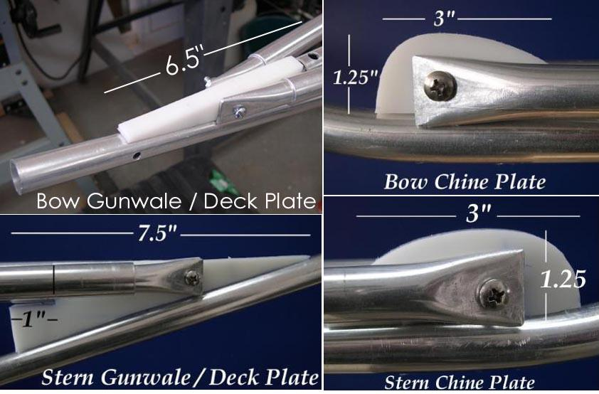

| Bow and Stern Plates (1 of 3) | Menu Previous Page Next Page |
|
 Attaching The Stem Plates - Stainless machine screws( 10 / 24 X 1.25") are used to attach the gunwales and chines stringers to the plates. The Deck tube is attached to the plate using a 1" wood screw . The keel is attached to the plates with 3/4" - 1" wood screws. Note: For salt water use, only stainless screws are recommended. |
|